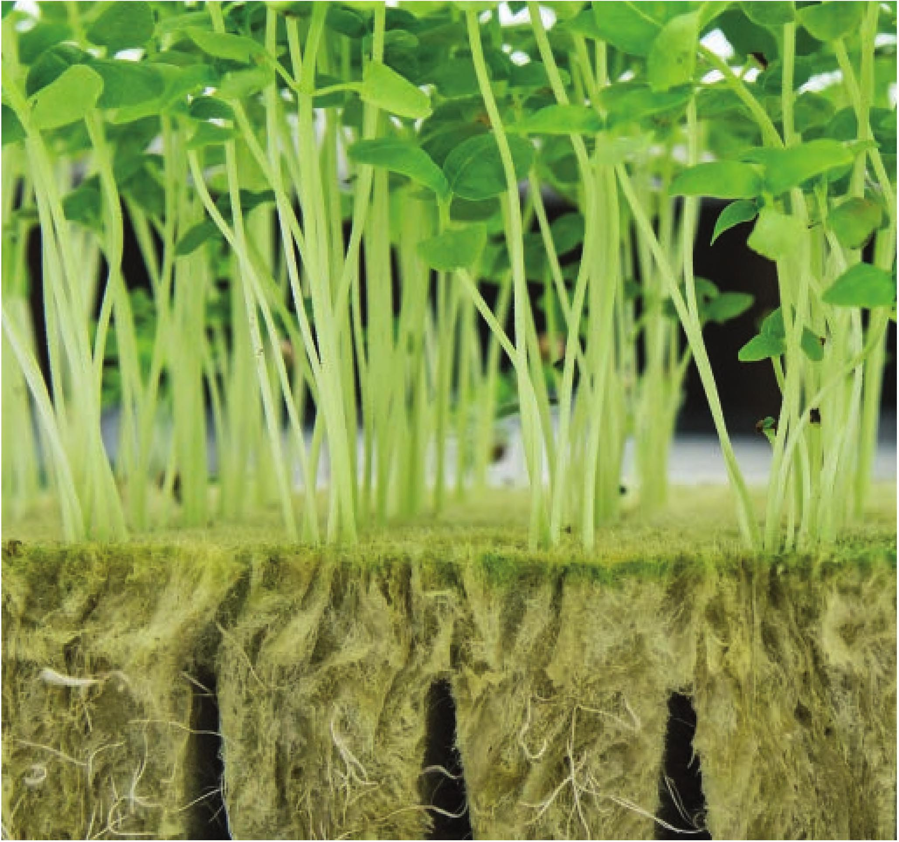

mm * * £ * $* ,$v ♦. ; rr^ V&’^jrir j& r^k;%w->. — 4^ 9 0 <1* *' it it ■ # if . , v,. .;-;**■ tA «A U r, ;• * **;n IpsKkto Poor spinach germination due to high temperatures These basil seedlings are showing signs of stretch due to low light. These seedlings are still usable in this condition but they are on the edge of being unusable. Plants grown under low light will have weak stems and may not be able to support themselves. SEEDLING PROBLEMS Growing a healthy seedling can be one of the most challenging steps in the process for new hydroponic gardeners. Here are just a few of the reasons you may be having poor germination, seedling death, or poor seedling quality. • Substrate is too wet and rotting the young seedlings (common with fine coco and heavy soil). • Substrate is too dry. • Seedlings have long, weak stems due to low light levels. • Some seeds naturally have low germination rates. • Some seeds are very sensitive to temperature. WILTING It is possible to overwater in some hydroponic systems. Letting the root zone dry out between irrigation cycles is beneficial to most crops. There are many techniques for determining when to water a crop, including the finger test, lift checks, and meters. The finger test is simply putting a finger through the surface of the substrate to check for moisture. Finger tests are less useful on large pots that can retain a lot of moisture deeper than a finger can test. A list test is more effective for large potted plants. Simply lift the pot to see if it is heavy with water weight. Water is very heavy and it will be noticeable when the pot is light and in need of water. There are a variety 168 DIY HYDROPONIC GARDENS
